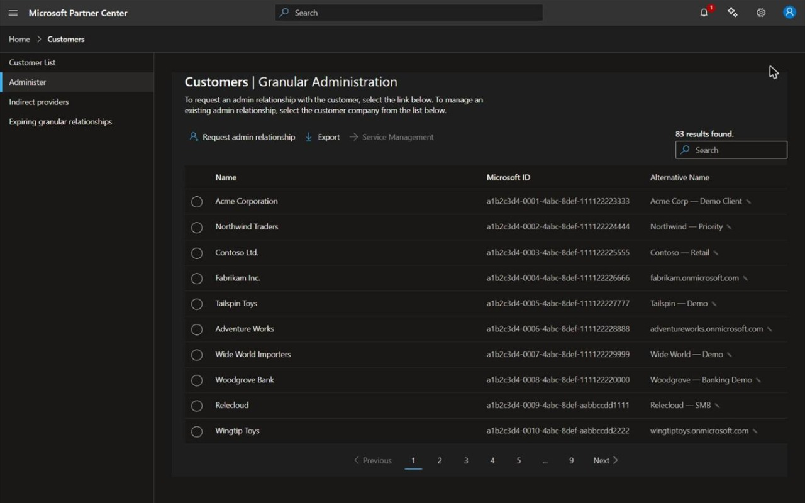
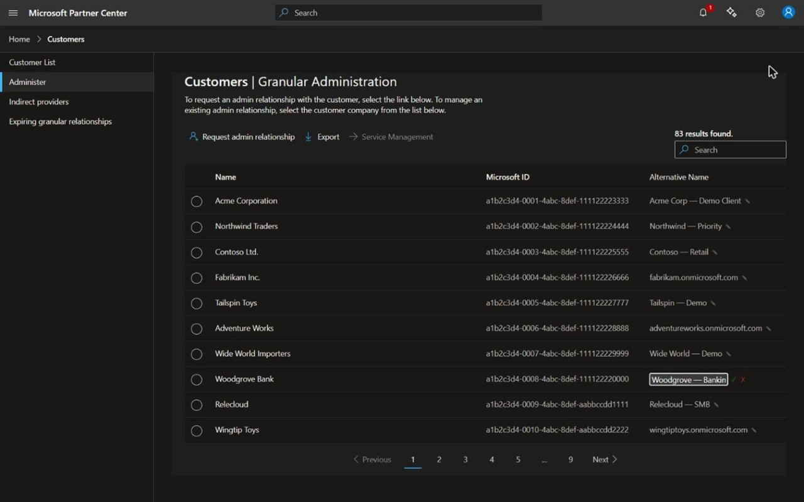
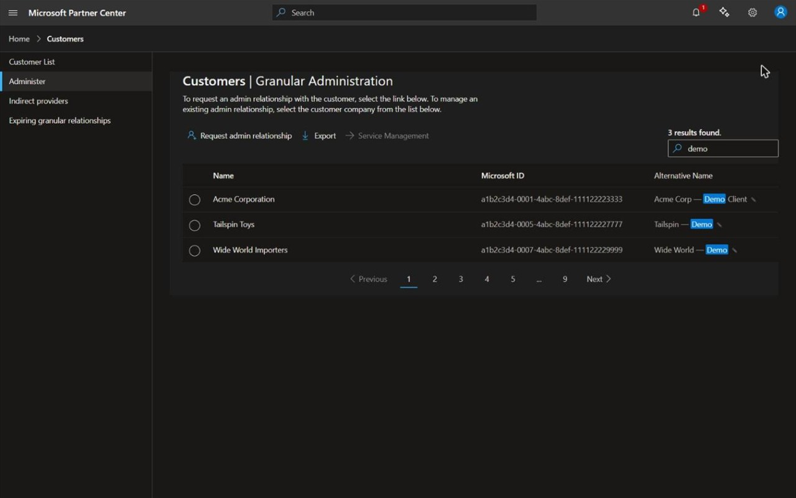

Microsoft's Customers | Granular Administration (GDAP) page only shows each customer's
display name and tenant ID — which is rarely how you actually think of your customers. This extension
adds an editable “Alternative Name” column showing each customer's primary domain,
lets you assign your own private label to any customer, and makes the page's built-in search box match those
labels too.
Features
Extra column — shows each customer's primary domain (e.g. acmecorp.onmicrosoft.com), with their display name as fallback.
Editable labels — give any customer your own custom name; reset to the original at any time.
Searchable — the page's search box also matches your custom names.
Portable — export your labels to a JSON file and import them in another browser or profile.
Fast — customer data is cached locally for 30 days and can be rebuilt on demand from the toolbar popup.
Private — everything stays in your browser; data is exchanged only with Microsoft's own APIs. See the Privacy Policy.
Screenshots
All screenshots use fictional sample data.

The Alternative Name column on the customer list — custom labels and primary domains side by side with Microsoft's own data.

Edit a name inline — click the pencil, type your label, confirm.

The built-in search box matches your custom names too — searching demo finds customers whose Microsoft name is something else entirely.